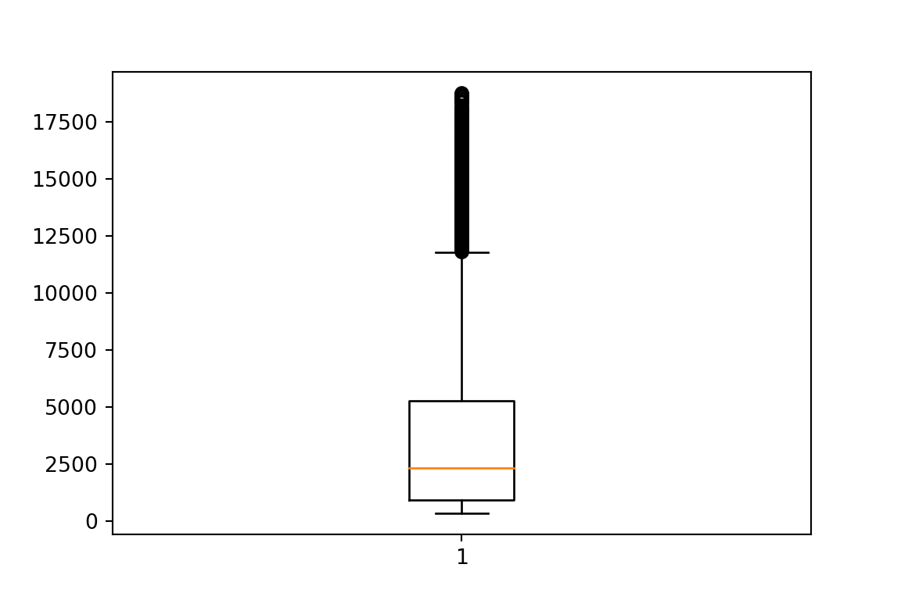

library("reticulate")
# reticulate::install_miniconda()
use_python(file.path(miniconda_path(), "bin", "python3.11"))
# py_install("pandas")
# py_install("matplotlib")
# py_install("seaborn")Boxplot
First explanation
Median (Q2): The median is the middle value of the dataset when it’s sorted in ascending order. It represents the central tendency of the data and is shown as a line inside the box.
Quartiles (Q1 and Q3): The interquartile range (IQR) is the range between the first quartile (Q1) and the third quartile (Q3). The box in the box plot represents the IQR.
Whiskers: The whiskers extend from the box to the minimum and maximum values within a certain range. The range can be defined in different ways:
Mild outliers: Whiskers extend to 1.5 times the IQR from the quartiles, and data points beyond that range are considered outliers.
Extreme outliers: Whiskers extend to 3 times the IQR from the quartiles, and data points beyond that range are considered extreme outliers.
Data range: Whiskers extend to the minimum and maximum data values within the dataset.
Outliers: Outliers are individual data points that fall outside the range defined by the whiskers. They are often represented as individual points on the plot.
How to Read a Box Plot:
The box represents the interquartile range (IQR), with the bottom and top edges of the box representing the first (Q1) and third (Q3) quartiles.
The line inside the box represents the median (Q2).
The whiskers extend from the box to show the range of non-outlier data points.
Outliers, if present, are typically shown as individual points beyond the whiskers.
Uses of Box Plots:
Data Distribution Visualization: Box plots provide a quick and clear visualization of the spread and central tendency of data.
Identifying Outliers: They are useful for identifying potential outliers in a dataset.
Comparing Distributions: Box plots are valuable for comparing the distributions of multiple datasets side by side.
Summary Statistics: They display important summary statistics (median, quartiles, and potential outliers) in a compact format.
Data Quality Assessment: Box plots can help assess the quality and consistency of data.
In summary, a box plot is a visual representation of data that displays key statistics about the dataset’s distribution. It’s a valuable tool for understanding the central tendency, spread, and potential outliers in your data, making it a common choice in statistical analysis and data visualization.
Visual alphabet
Multiplicity: A box plot can represent the multiplicity of data distributions when used to compare multiple datasets side by side. Each box plot can show the characteristics of a different dataset, enabling the viewer to understand the multiplicity of distributions.
Position: The position of the box plot on an axis represents the location of the data, while the vertical positioning of elements like the box and whiskers reflects quartiles and the median, conveying central tendencies and data distribution.
Length: The length of the whiskers represents the range of non-outlier data points. A longer whisker indicates a wider range of data, while the height of the box signifies the interquartile range (IQR).
Angle: The box plot is typically a 2D representation, so angles are not a primary visual element used in its construction.
Area: The area of the box visually represents the interquartile range (IQR), providing insight into the concentration and spread of data within the central 50% of the dataset.
Color: While box plots are traditionally displayed in monochromatic or grayscale, color can be used to highlight specific data or to differentiate between multiple box plots when comparing datasets.
Opacity: Opacity, or transparency, is not commonly used in traditional box plots but could be applied to add layers of information or emphasize specific data points when used in more advanced visualization techniques.
3D: Box plots are traditionally created in a 2D format, but in some advanced visualization contexts, 3D representations might be employed to illustrate more complex data distributions.
Shape: The shape of a box plot is primarily rectangular, consisting of a box, whiskers, and potentially individual data points for outliers.
Texture: Texture is not commonly applied to box plots; however, texture could be used to provide additional visual information in more complex graphical presentations.
Orientation: The orientation of a box plot is typically vertical, with the box and whiskers extending vertically along an axis. However, they can also be displayed horizontally, depending on the context of the data presentation.
Programming
First we can configure the environment for mixed programming. Using another engine will need another setup.
library("knitr")
opts_chunk$set(
fig.width = 6,
fig.height = 4,
message = FALSE,
warning = FALSE,
echo = TRUE,
results = "asis"
)library("ggplot2")
library("magrittr")
library("dplyr")
diamonds %<>%
sample_n(5000) # disminuir los datos p
# diamonds %>%
# glimpseimport numpy as np
import pandas as pd
import matplotlib.pyplot as plt
import seaborn as sns
import matplotlib.colors
# You can uncomment this line to change the style of the graphs.
# plt.style.use('ggplot')
diamonds = r.diamondsUsing r-base
boxplot(diamonds[["price"]])boxplot(): This is a function in R used to create a boxplot, a graphical representation of the distribution of a dataset.
diamonds[[“price”]]: This part of the code accesses the “price” column of the “diamonds” dataset. In R, the double square brackets [[]] are used to extract a single column as a vector.
Using ggplot
ggplot(diamonds) +
aes(y = price) +
geom_boxplot()Explanation of ggplot implemntation, step-by-Step Breakdown:
ggplot(diamonds): This initializes a ggplot2 plot and specifies the dataset diamonds as the data source for the plot. It tells ggplot to use the “diamonds” dataset for visualization.
aes(y = price): This line sets up the aesthetic mappings for the plot. It specifies that the “price” column from the dataset should be mapped to the y-axis, which is the vertical axis of the plot. This means that the values from the “price” column will be displayed on the y-axis of the boxplot.
geom_boxplot(): This adds a boxplot geometry to the plot. It tells ggplot2 to create a boxplot using the data and aesthetic mappings you’ve specified. The boxplot will display the distribution of the “price” values from the “diamonds” dataset, showing key statistics like the median, quartiles, and potential outliers.
Using pandas
plt.figure()
diamonds.plot.box(column="price")
plt.show()plt.close()Explanation of pandas plotting
plt.figure(): This function call creates a new figure for the plot. In Matplotlib, a figure is essentially a container that holds one or more plots or visualizations. When you call plt.figure(), you create a new blank canvas for your plot.
diamonds.plot.box(column=“price”): This line generates a boxplot for the “price” column of the “diamonds” dataset using Pandas’ built-in plotting function. The column parameter specifies the column from the DataFrame to be used for creating the boxplot. This line will create the boxplot and set it up within the current figure.
plt.show(): This function call displays the plot. After setting up the figure and creating the boxplot, plt.show() is necessary to actually render the plot and show it on your screen.
plt.close(): This function call closes the current figure that was created by plt.boxplot(). It’s generally a good practice to close figures when you’re done with them to avoid any unexpected interactions between different plots or figures.
Using seaborn
sns.boxplot(y='price', data=diamonds)
plt.show()plt.close()Explanation of seaborn use
sns.boxplot: This part of the code is a function call that creates a boxplot using the Seaborn (sns) library. A boxplot is a graphical representation of the distribution of a dataset.
y=‘price’: This part specifies the column “price” to be plotted on the y-axis (vertical axis) of the boxplot. It tells Seaborn to use the values from the “price” column of the dataset for the y-axis.
data=diamonds: This part specifies the dataset to be used for creating the boxplot. The variable “diamonds” is assumed to be a DataFrame or a data source containing the dataset you want to visualize. The “price” column from this dataset is plotted.
plt.show(): This line is a function call from the Matplotlib (plt) library. It is used to display the plot generated by Seaborn. After you create the boxplot, you need to call plt.show() to render the plot and show it on your screen.
plt.close(): This function call closes the current figure that was created by plt.boxplot(). It’s generally a good practice to close figures when you’re done with them to avoid any unexpected interactions between different plots or figures.
Using matplotlib
plt.boxplot(diamonds['price']){‘whiskers’: [<matplotlib.lines.Line2D object at 0x7f46bc18fd10>, <matplotlib.lines.Line2D object at 0x7f46bf9fe350>], ‘caps’: [<matplotlib.lines.Line2D object at 0x7f46bc1614d0>, <matplotlib.lines.Line2D object at 0x7f46bc161890>], ‘boxes’: [<matplotlib.lines.Line2D object at 0x7f46bc18d390>], ‘medians’: [<matplotlib.lines.Line2D object at 0x7f46bc162510>], ‘fliers’: [<matplotlib.lines.Line2D object at 0x7f46bc163a90>], ‘means’: []}
plt.show()
plt.close()How it works
plt.boxplot: This is a function call from the Matplotlib library (typically aliased as plt) that creates a boxplot. A boxplot is a graphical representation of the distribution of a dataset.
diamonds[‘price’]: This part specifies the data that you want to visualize in the boxplot. It accesses the “price” column from the “diamonds” dataset (assuming “diamonds” is a DataFrame or a similar data structure).
plt.show(): This line is a function call from the Matplotlib (plt) library. It is used to display the plot generated by Seaborn. After you create the boxplot, you need to call plt.show() to render the plot and show it on your screen.
plt.close(): This function call closes the current figure that was created by plt.boxplot(). It’s generally a good practice to close figures when you’re done with them to avoid any unexpected interactions between different plots or figures.
Comparing subsets
Boxplots are good for comparing subsets because they provide a clear visual summary of the distribution, central tendency, and variability within each subset, making it easy to identify differences and patterns at a glance.
Using r-base
boxplot(price ~ cut, data = diamonds)Using ggplot
ggplot(diamonds) +
aes(x = cut, y = price) +
geom_boxplot()
Using pandas
plt.figure()
diamonds.plot.box(column="price", by = "cut")price Axes(0.125,0.11;0.775x0.77) dtype: object
plt.show()plt.close()Using seaborn
sns.boxplot(y="price", x="cut", data=diamonds)
plt.show()plt.close()Using matplotlib
ls_price_cut = diamonds.groupby("cut")["price"].apply(list)
cut_labels = diamonds["cut"].unique()
plot = plt.boxplot(x = ls_price_cut, labels = cut_labels)
plt.show()plt.close()Using boxplots for margins
r-base code
layout(
mat = matrix(c(2, 1, 0, 3), nrow = 2, ncol = 2),
heights = c(1, 2),
widths = c(2, 1)
)
par(mar = c(5, 5, 0, 0), bty = "l", yaxt="s", xaxt="s")
plot(price ~ carat, data = diamonds)
par(bty = "n", yaxt="n", xaxt="n")
par(mar = c(0, 5, 0, 0))
boxplot(diamonds[["carat"]], horizontal = TRUE, bty = "n")
par(mar = c(5, 0, 0, 0))
boxplot(diamonds[["price"]])
ggplot code
ggplot(diamonds) +
geom_point(aes(x = carat, y = price)) +
geom_boxplot(aes(x = carat, y = 25000), width = 2500) +
geom_boxplot(aes(x = 6, y = price)) +
theme_minimal() pandas code
fig, axes = plt.subplots(nrows=2, ncols=2, width_ratios = [8, 2], height_ratios = [2, 8])
fig.patch.set_visible(False)
diamonds.plot.scatter("carat", "price", ax = axes[1, 0])
diamonds.plot.box(column = "carat", vert = False, ax = axes[0, 0])
diamonds.plot.box(column = "price", ax = axes[1, 1])
# axes.any().axis("off")
# axes.all().axis("off")
axes[0, 0].axis("off")(0.04899999999999999, 3.3710000000000004, 0.5, 1.5)
axes[1, 1].axis("off")(0.5, 1.5, -578.9000000000001, 19680.9)
axes[0, 1].axis("off")(0.0, 1.0, 0.0, 1.0)
fig.tight_layout()
plt.show()plt.close()